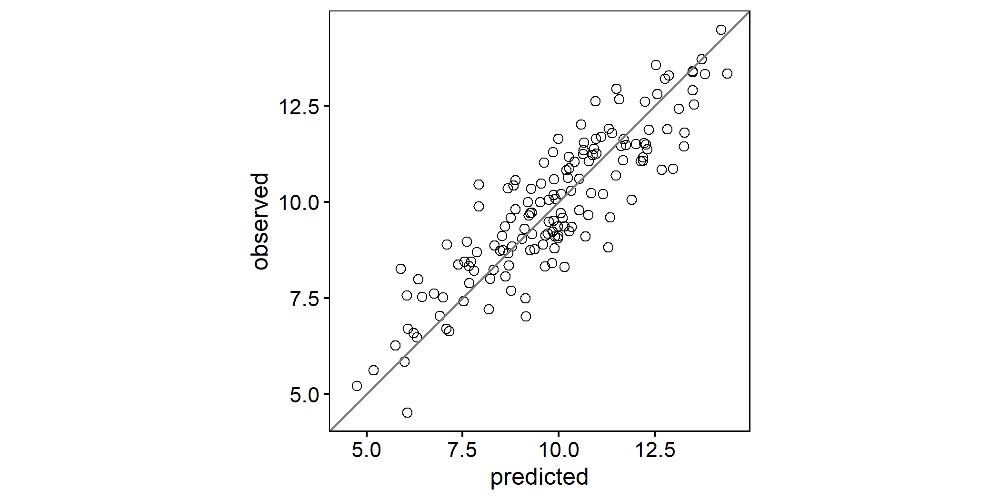
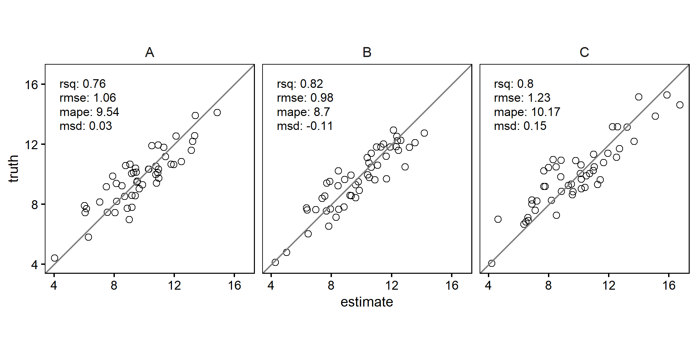
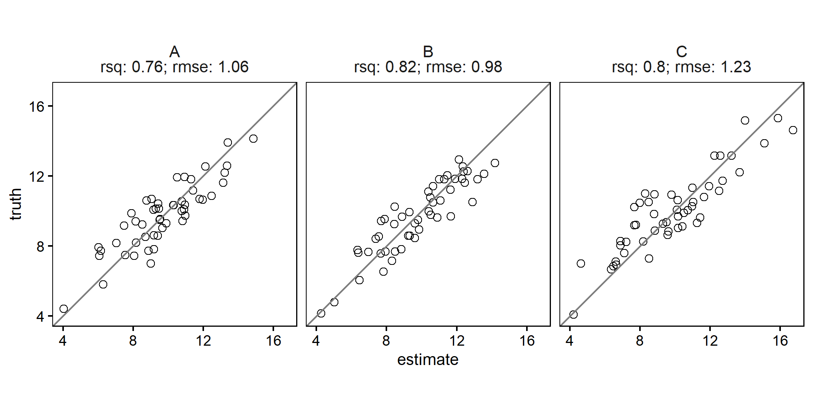

This package provides functions for quickly calculating measures of model prediction accuracy and creating enhanced scatterplots. The scatterplots can include text summarizing the agreement metrics (e.g., R², bias, RMSE) between two plotted variables, with support for grouped data and faceting.
Why?
Scatterplots are one of the most frequently used visualizations in my daily work. While creating a scatterplot is straightforward, I wanted a version that would meet these specific needs:
- Ensure the plot is always square.
- Include a 1:1 reference line.
- Display “predicted” values on the x-axis.
- Provide an optional text panel showing agreement statistics.
- Seamlessly handle grouped data, creating faceted plots with minimal effort.
Features
Calculate Model Prediction Accuracy: Use
agreement_metrics()to compute metrics like R2, bias and RMSE.Generate Scatterplots: Use
scatter()to generate scatterplots with optional agreement metrics text annotations, faceting for grouped data.
Examples
Simple scatterplot
library(dplyr)
library(ggplot2)
library(scatter)
# some fake data
df <-
tibble(
observed = c(rnorm(150, 10, 2)),
predicted = observed + rnorm(150,0, 1),
group = rep(c("A", "B", "C"), each = 50)
)
scatter(df, observed, predicted)
Scatterplot with agreement metrics
scatter(df, observed, predicted, add_metrics = TRUE)
Grouped scatterplot with agreement metrics
